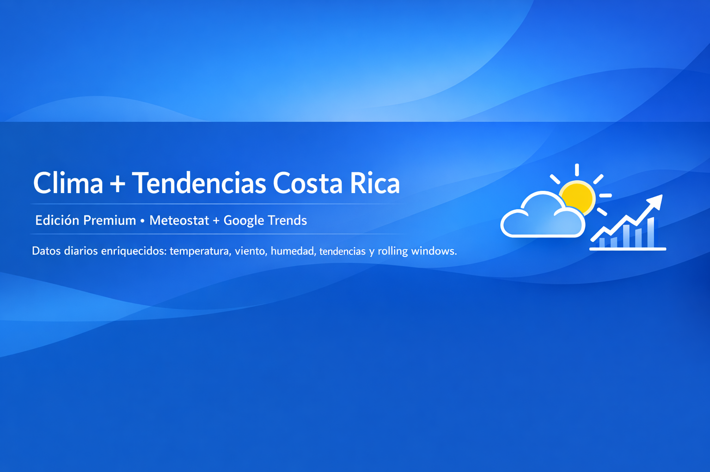

Datos Premium • Costa Rica • Clima + Tendencias • Actualización Diaria
Proveedor independiente de datos premium para análisis, modelos predictivos, dashboards y aplicaciones de inteligencia operativa. Integramos señales climáticas reales con tendencias de comportamiento digital para generar datasets enriquecidos con alto valor empresarial.
Ver en Google Cloud MarketplaceConsultas comerciales o técnicas:
📧 contact@siriodatalabs.com